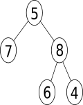

Activité de découverte#
La représentation ci-dessous est celle d’un arbre binaire.

Cette structure de données est hiérarchique et se compose des éléments suivants:
Le noeud initial appelé racine, placé en haut sur la représentation.
Les noeuds internes reliés entre eux par des arêtes.
Les noeuds terminaux appelés feuilles de l’arbre.
Deux noeuds d’un arbre sont reliés entre eux par un unique chemin.
Généalogie d’un arbre#
Le vocabulaire de la généalogie est souvent utilisé pour hiérarchiser les noeuds d’un arbre.
Un noeud \(x\) est le père d’un noeud \(y\) si celui-ci est un successeur de \(x\).
Deux noeuds sont frères s’ils ont le même père.
Les ancêtres d’un noeud \(x\) sont tous les noeuds situés sur le chemin reliant la racine au noeud \(x\).
Un noeud \(y\) est appelé descendant d’un noeud \(x\) si \(x\) est un ancêtre de \(y\).
Quels sont les noeuds racine de l’arbre représenté ci-dessus ?
Quels sont les ancêtres du noeud de valeur 6 ? et du noeud de valeur 5 ?
Quels sont les descendants du noeud de valeur 8 ?
Mesurer un arbre#
Un arbre binaire peut être mesuré. On utilise plusieurs indicateurs comme la taille, la profondeur, le niveau et la hauteur.
La taille est le nombre de noeuds d’un arbre. Quelle est la taille de l’arbre binaire ci-dessus ?
La profondeur d’un noeud est égale à la longueur du chemin reliant la racine de l’arbre à ce noeud , c’est à dire le nombre d’arêtes entre la racine et le noeud .
Quelle est la profondeur du noeud de valeur 8 dans l’arbre ci-dessus si on considère la racine de profondeur 0 ?
Le niveau d’un noeud est l’ensemble des noeuds de l’arbre de même profondeur. Quel est le niveau du noeud de valeur 8 dans l’arbre ?
La hauteur de l’arbre est la profondeur maximale d’une de ses feuilles. Donner la hauteur de l’arbre.
La hauteur d’un noeud est la hauteur du sous-arbre dont ce noeud est la racine.
Quelle est la hauteur du noeud de valeur 6 ?
Des mesures encadrées#
Dans cette partie, on va représenter des arbres binaires répondant à certaines caractéristiques. Les valeurs n’ont pas d’importance ici et peuvent être choisies au hasard.
Représenter dans chaque cas un arbre binaire de taille \(n=6\) tel que:
sa hauteur est \(h=3\)
de hauteur maximale
de hauteur minimale
On suppose la taille \(n\) de l’arbre fixée.
Quelle est la hauteur maximale de l’arbre ? On précisera la forme de l’arbre dans ce cas.
Quelle est la hauteur minimale de l’arbre ? On précisera la forme de l’arbre dans ce cas.
En déduire un encadrement de la hauteur \(h\) de l’arbre en fonction de la taille \(n\).
Représenter dans chaque cas un arbre binaire de hauteur \(h=3\) tel que:
sa taille est \(n=5\)
de taille maximale
de taille minimale
On suppose la hauteur \(h\) de l’arbre fixée.
Quelle est la taille minimale de l’arbre ? On précisera la forme de l’arbre dans ce cas.
Quelle est la taille maximale de l’arbre ? On précisera la forme de l’arbre dans ce cas.
En déduire un encadrement de la taille \(n\) de l’arbre en fonction de la hauteur \(h\).
Quelles sont les tailles possibles pour un arbre de hauteur \(h=8\) ?
Quelles sont les hauteurs possibles pour un arbre de taille \(n=25\) ?
Structure récursive d’un arbre binaire#
La structure hiérarchique d’un arbre binaire est récursive :
cas de base : un noeud unique \(r\) ne possédant pas de fils;
récurrence : un noeud racine avec au moins un sous-arbre non vide, sous-arbre gauche et/ou sous-arbre droit.
On convient de noter ces arbres en respectant les règles suivantes:
un arbre est noté : noeud ( valeur, arbre gauche, arbre droit)
un arbre vide est noté : \(\varnothing\) ou \(\text{None}\)
une feuille est notée : noeud (valeur, \(\varnothing\), \(\varnothing\)) ou noeud (valeur)
Donner la notation récursive de l’arbre donné en début d’activité.
Représenter l’arbre binaire dont on donne la définition récursive suivante:
noeud ( 7, noeud ( 9, noeud (1), noeud (2)), noeud ( 4, noeud (6), noeud ( 5, noeud (8), noeud (3))))
Arbres binaires en Python#
L’arbre binaire n’est pas une structure de donnée native en Python. Comment représenter, construire une telle structure de donnée ? Proposer des pistes de réflexion et l’appliquer à l’arbre proposé en début d’activité.